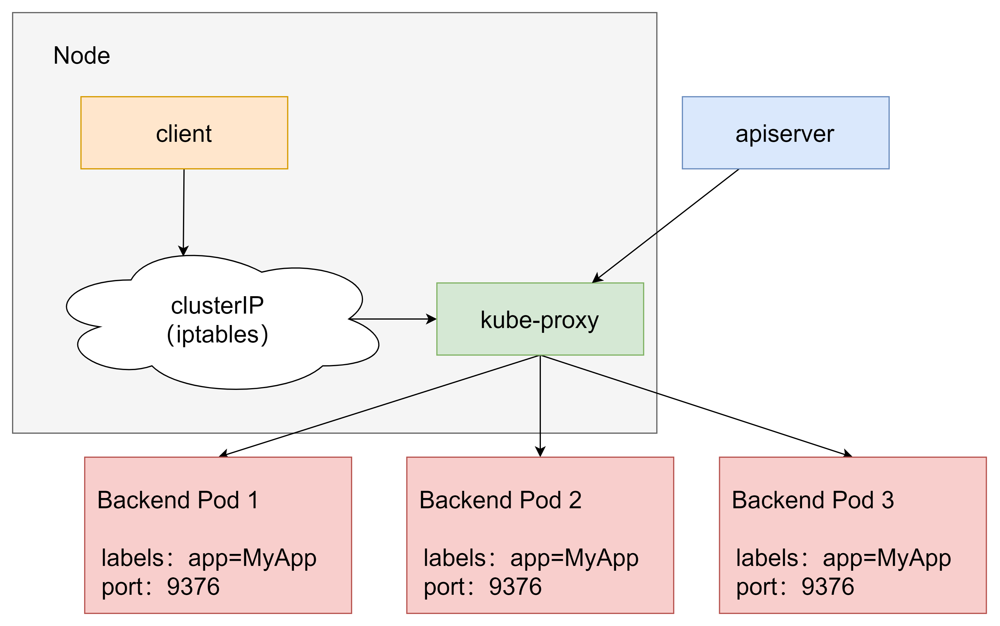
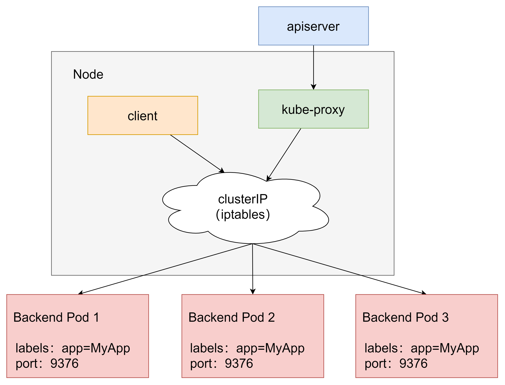
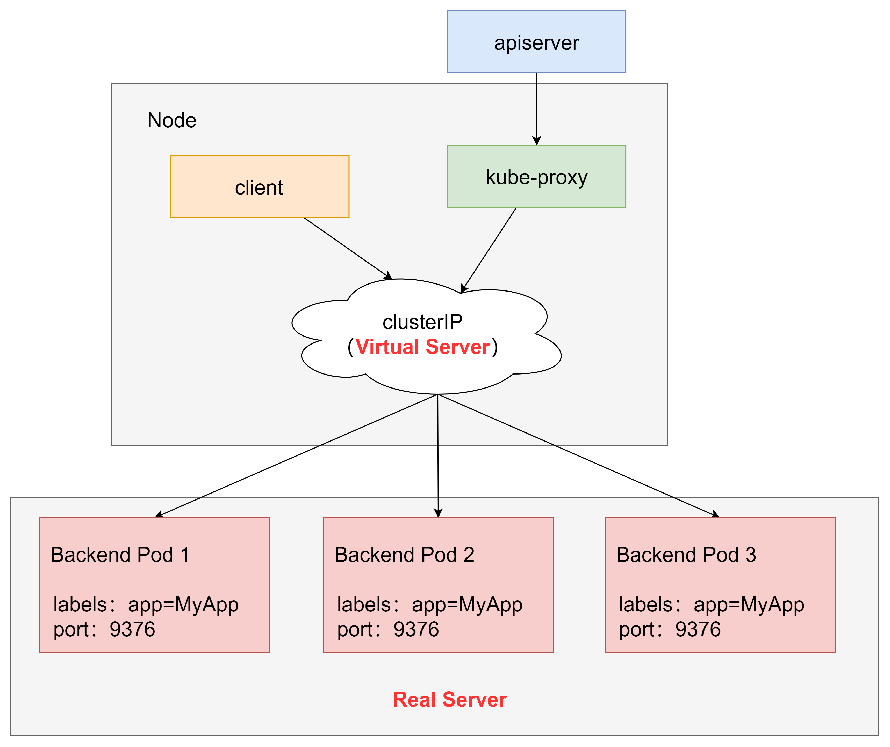
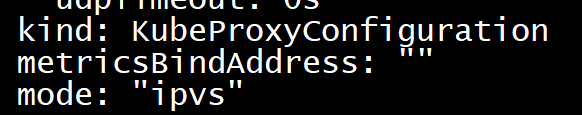

kube-proxy
kube-proxy 目前支持三种工作模式：
- userspace模式
- iptables模式
- ipvs模式
userspace模式
userspace模式下，kube-proxy为service后端的每个service创建一个监听端口，发向cluster ip的请求被iptables规则重定向到kube-proxy监听的端口上，kube-proxy根据LB算法选择一个提供服务的pod并和其建立连接，以将请求转发到pod上。
该模式下，kube-proxy充当了一个四层负载均衡器的角色，由于kube-proxy运行在userspace中，在进行转发处理时会增加内核和用户空间之间的数据拷贝，虽然比较稳定，但是效率比较低。

iptables模式
iptables模式下，kube-proxy为service后端的每个pod创建对应的iptables规则，直接将发向cluster ip的请求重定向到一个pod ip。
该模式下kube-proxy不承担四层负载均衡器的角色，只负责创建iptables规则。该模式的优点是较userspace模式效率更高，但不能提供灵活的LB策略，当后端pod不可用时也无法进行重试

ipvs模式
ipvs模式和iptables类似，kube-proxy监控pod的变化并创建相应的ipvs规则，ipvs相对iptables转发效率更高。除此以外，ipvs支持更多的LB算法。

此模式必须安装ipvs内核模块，否则会降级为iptables。
- 安装ipset和ipvsadm
[root@master ~]# yum install ipset ipvsadm -y
- 写入脚本文件
[root@master ~]# cat <<EOF> /etc/sysconfig/modules/ipvs.modules
> #!/bin/bash
modprobe -- ip_vs
modprobe -- ip_vs_rr
modprobe -- ip_vs_wrr
modprobe -- ip_vs_sh
modprobe -- nf_conntrack_ipv4
EOF
- 执行
[root@master ~]# chmod +x /etc/sysconfig/modules/ipvs.modules
#执行脚本文件
[root@master ~]# /bin/bash /etc/sysconfig/modules/ipvs.modules
- 查看对应的模块是否加载成功
[root@master ~]# lsmod |grep -e ip_vs -e nf_conntrack_ipv4
ip_vs_sh 12688 0
ip_vs_wrr 12697 0
ip_vs_rr 12600 0
ip_vs 145497 6 ip_vs_rr,ip_vs_sh,ip_vs_wrr
nf_conntrack_ipv4 15053 15
nf_defrag_ipv4 12729 1 nf_conntrack_ipv4
nf_conntrack 139264 10 ip_vs,nf_nat,nf_nat_ipv4,nf_nat_ipv6,xt_conntrack,nf_nat_masquerade_ipv4,nf_nat_masquerade_ipv6,nf_conntrack_netlink,nf_conntrack_ipv4,nf_conntrack_ipv6
libcrc32c 12644 4 xfs,ip_vs,nf_nat,nf_conntrack
- 重启系统。
- 开启ipvs
[root@master ~]# kubectl edit cm kube-proxy -n kube-system
将mode改为ipvs

删除kube-proxy的pod并重建
[root@master ~]# kubectl delete pod -l k8s-app=kube-proxy -n kube-system
pod "kube-proxy-lwls6" deleted
pod "kube-proxy-scwzg" deleted
pod "kube-proxy-sn9kc" deleted
查看ipvs，发现产生了一批规则
[root@master ~]# ipvsadm -Ln
IP Virtual Server version 1.2.1 (size=4096)
Prot LocalAddress:Port Scheduler Flags
-> RemoteAddress:Port Forward Weight ActiveConn InActConn
TCP 172.17.0.1:30002 rr
-> 10.244.1.95:80 Masq 1 0 0
-> 10.244.1.97:80 Masq 1 0 0
-> 10.244.2.41:80 Masq 1 0 0
TCP 172.17.0.1:32000 rr
-> 10.244.0.15:8443 Masq 1 0 0
TCP 172.18.0.1:30002 rr
-> 10.244.1.95:80 Masq 1 0 0
-> 10.244.1.97:80 Masq 1 0 0
-> 10.244.2.41:80 Masq 1 0 0
TCP 172.18.0.1:32000 rr
-> 10.244.0.15:8443 Masq 1 0 0
TCP 172.19.0.1:30002 rr
-> 10.244.1.95:80 Masq 1 0 0
-> 10.244.1.97:80 Masq 1 0 0
-> 10.244.2.41:80 Masq 1 0 0
TCP 172.19.0.1:32000 rr
-> 10.244.0.15:8443 Masq 1 0 0
TCP 172.21.0.1:30002 rr
-> 10.244.1.95:80 Masq 1 0 0
-> 10.244.1.97:80 Masq 1 0 0
-> 10.244.2.41:80 Masq 1 0 0
TCP 172.21.0.1:32000 rr
-> 10.244.0.15:8443 Masq 1 0 0
TCP 172.22.0.1:30002 rr
-> 10.244.1.95:80 Masq 1 0 0
-> 10.244.1.97:80 Masq 1 0 0
-> 10.244.2.41:80 Masq 1 0 0
TCP 172.22.0.1:32000 rr
-> 10.244.0.15:8443 Masq 1 0 0
TCP 172.24.0.1:30002 rr
-> 10.244.1.95:80 Masq 1 0 0
-> 10.244.1.97:80 Masq 1 0 0
-> 10.244.2.41:80 Masq 1 0 0
TCP 172.24.0.1:32000 rr
-> 10.244.0.15:8443 Masq 1 0 0
TCP 172.25.0.1:30002 rr
-> 10.244.1.95:80 Masq 1 0 0
-> 10.244.1.97:80 Masq 1 0 0
-> 10.244.2.41:80 Masq 1 0 0
TCP 172.25.0.1:32000 rr
-> 10.244.0.15:8443 Masq 1 0 0
TCP 192.168.200.101:30002 rr
-> 10.244.1.95:80 Masq 1 0 0
-> 10.244.1.97:80 Masq 1 0 0
-> 10.244.2.41:80 Masq 1 0 0
TCP 192.168.200.101:32000 rr
-> 10.244.0.15:8443 Masq 1 0 0
TCP 10.96.0.1:443 rr
-> 192.168.200.101:6443 Masq 1 0 0
TCP 10.96.0.10:53 rr
-> 10.244.0.14:53 Masq 1 0 0
-> 10.244.0.16:53 Masq 1 0 0
TCP 10.96.0.10:9153 rr
-> 10.244.0.14:9153 Masq 1 0 0
-> 10.244.0.16:9153 Masq 1 0 0
TCP 10.96.34.175:443 rr
-> 10.244.0.15:8443 Masq 1 0 0
TCP 10.96.106.156:8000 rr
-> 10.244.0.13:8000 Masq 1 0 0
TCP 10.96.127.29:443 rr
-> 10.244.2.40:4443 Masq 1 0 0
TCP 10.96.253.220:80 rr
-> 10.244.1.95:80 Masq 1 0 0
-> 10.244.1.97:80 Masq 1 0 0
-> 10.244.2.41:80 Masq 1 0 0
TCP 10.244.0.0:30002 rr
-> 10.244.1.95:80 Masq 1 0 0
-> 10.244.1.97:80 Masq 1 0 0
-> 10.244.2.41:80 Masq 1 0 0
TCP 10.244.0.0:32000 rr
-> 10.244.0.15:8443 Masq 1 0 0
TCP 10.244.0.1:30002 rr
-> 10.244.1.95:80 Masq 1 0 0
-> 10.244.1.97:80 Masq 1 0 0
-> 10.244.2.41:80 Masq 1 0 0
TCP 10.244.0.1:32000 rr
-> 10.244.0.15:8443 Masq 1 0 0
UDP 10.96.0.10:53 rr
-> 10.244.0.14:53 Masq 1 0 0
-> 10.244.0.16:53 Masq 1 0 0